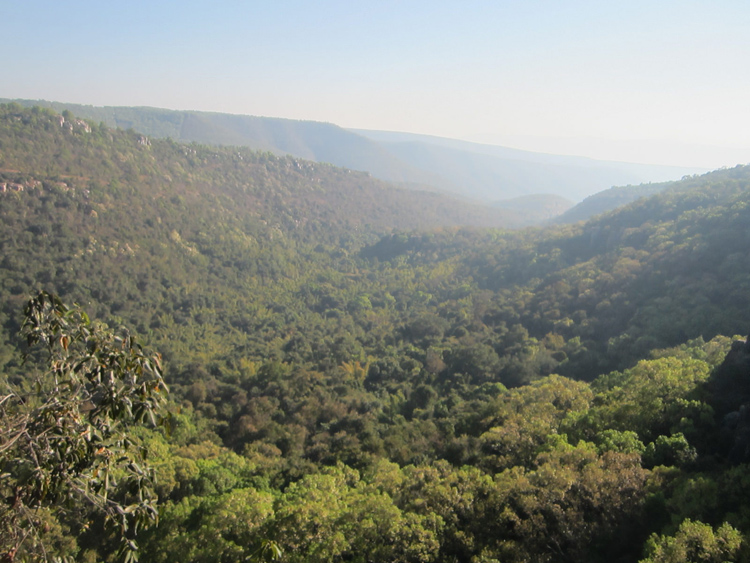

India Tourism
1. Vishakhapatnam
 Probably one of the most beautiful coastal cities in Andhra Pradesh, Vishakhapatnam is a place that every nature lover should visit. Fondly called Vizag, this city is not only a beach destination in Andhra, but a land with vivid landscape. Lakes, beaches, caves, valleys and hill ranges all make Vishakhapatnam a must-visit place in Andhra Pradesh. Apart from natural splendors, Vizag is enriched with architectural grandeurs, the spiritual centres or temples are the best specimen of the architecture in the city.
Probably one of the most beautiful coastal cities in Andhra Pradesh, Vishakhapatnam is a place that every nature lover should visit. Fondly called Vizag, this city is not only a beach destination in Andhra, but a land with vivid landscape. Lakes, beaches, caves, valleys and hill ranges all make Vishakhapatnam a must-visit place in Andhra Pradesh. Apart from natural splendors, Vizag is enriched with architectural grandeurs, the spiritual centres or temples are the best specimen of the architecture in the city.
How to Reach: Vishakhapatnam has good transport facilities. The city is well-connected by air, rail and road. So, one can decide which mode to use accordingly.
2. Tirupati
 Famed for its temple, Tirupati is the popular spiritual hub in Andhra Pradesh. Tirupati is in the Chitoor distrct of Aandhra Pradesh and it houses the famous Hindu temple of Sri Venkateswara that is frequented by millions of devotees each year. Apart from temples, Tirupati is known for red wooden toys and it is also a major educational centre in the state.
Famed for its temple, Tirupati is the popular spiritual hub in Andhra Pradesh. Tirupati is in the Chitoor distrct of Aandhra Pradesh and it houses the famous Hindu temple of Sri Venkateswara that is frequented by millions of devotees each year. Apart from temples, Tirupati is known for red wooden toys and it is also a major educational centre in the state.
How to Reach: At a distance of 15kms from the main city, Tirupati airport is situated in the Renigunta region. Flights to Chennai, Hyderabad and Bangalore operate from here. Tirupati also has good rail connectivity. From Tirupati Railway Station trains to Bangalore, Chennai, Visakhapatnam, Madurai and Mumbai are available. Road transport is also well-maintained in Tirupati, buses from all major cities of South India are available.
3. Vijayawada
 Located on the bank of Krishna River, Vijayawada is known for its luscious mangoes, tasty sweets and beautiful spring season. The city is also famed for having the largest railway junction in South India. Once an important town during the Vijayanagra Kingdom, Vijayawada is replete with heritage edifices and natural splendors like caves and hills and is one of the must-see places in Andhra Pradesh.
Located on the bank of Krishna River, Vijayawada is known for its luscious mangoes, tasty sweets and beautiful spring season. The city is also famed for having the largest railway junction in South India. Once an important town during the Vijayanagra Kingdom, Vijayawada is replete with heritage edifices and natural splendors like caves and hills and is one of the must-see places in Andhra Pradesh.
How to Reach: Vijayawada airport is situated 20kms from the city of Gannavarman. Regular flights to Hyderabad and Vishakhapatnam operate from Vijayawada. Rail transport is also easy as Vijayawada is a major railhead in Andhra Pradesh. Road transport is well-maintained; there are many state and interstate buses available on regular intervals from Vijayawada.
4. Nellore
 Nellore boasts of an incredible spiritual and religious legacy in Andhra Pradesh. Having significance as a historic centre, Nellore is probably one of the places that might intrigue every history buff. At Nellore the evidences available with regard to its contribution to arts and literature since prehistoric times highlight its rich cultural past. Also, the city is known for the production of ores such as mica and lime and agriculture production of rice. The city is also admired for aquaculture and delicious sweets like Malai Kajaa and the Bobbatlu.
Nellore boasts of an incredible spiritual and religious legacy in Andhra Pradesh. Having significance as a historic centre, Nellore is probably one of the places that might intrigue every history buff. At Nellore the evidences available with regard to its contribution to arts and literature since prehistoric times highlight its rich cultural past. Also, the city is known for the production of ores such as mica and lime and agriculture production of rice. The city is also admired for aquaculture and delicious sweets like Malai Kajaa and the Bobbatlu.
How to Reach: The best way to reach Nellore would be to board a train, as the Railway Station of Nellore is well-connected with major cities of India. Road transport is also decent, as there are several buses that ply between Nellore and major cities of Andhra Pradesh.
5. Chittoor

One of the most beautiful districts, Chittoor is a popular place to visit in Andhra Pradesh. Rich in flora and fauna and having copious historic significance, Chittoor certainly is an epic land in the state. It is to be mentioned that Chittoor has some of the richest temples in the world and this district has a perfect blend of various elements to satisfy people of spiritual, religious and artistic mindset.
How to Reach: The best way to reach Chittoor would be by train. There are railway stations at Chittoor (CTO), Piler (PIL), Gudupalli (GDP), Kotala (KEN), Yerpedu (YPD) that have trains connecting Chittoor to major cities of the country.